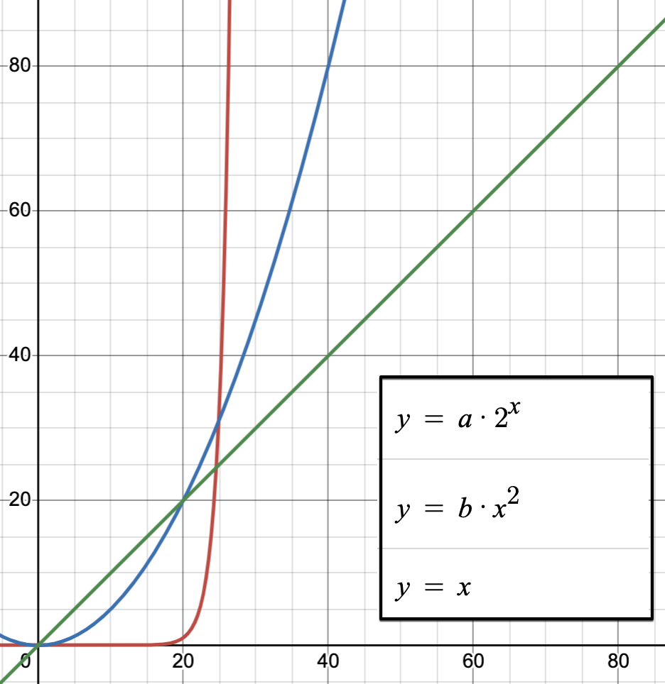

algorithmique avancé
Problèmes et algorithmes
stratégies et limitations
Les algorithmes ne peuvent pas resoudre tous les problèmes existants, même si ces problèmes sont bien énoncés mathématiquement. Il n’existe pas non plus une infinité d’algorithmes différents. liste complète de tous les principaux algorithmes (300).
Souvent, c’est le même algorithme qui resoud toute une famille de problèmes. Il suffit d’arranger l’énoncé, de bien identifier les variables d’entrée, d’interpréter convenablement la sortie de l’algorithme.
Par exemple: les énoncés suivants traitent du même problème mathématique:
- Rendu de monnaie optimal: Comment rendre 7 euros en utilisant une caisse constituée de pieces ou billets de 5, 2 et 1 euro?
- Decoupe optimale d’une barre de fer: Comment réaliser des découpes dans une barre de 7m afin d’optimiser le benefice? Sachant que les clients vont demander des coupes de 5, 2 et 1m. Et que le benefice est plus grand lorsque l’on fait le moins de coupes possible. (voir illustration uliege.be)
- Occupation optimale d’une salle de spectacle
- …
On verra que pour certains problèmes dits de décision, ou optimisation, la recherche d’une solution peut se faire en écrivant un algorithme. Mais qu’il n’est pas possible d’executer cet algorithme sur une machine en un temps raisonnable.
Le problème du rendu de monnaie
Le problème du rendu de monnaie est un problème d’algorithmique. Il s’énonce de la façon suivante : étant donné un système de monnaie (pièces et billets), comment rendre une somme donnée de façon optimale?
Il existe de nombreuses façons de rendre la monnaie. Mais quelle solution le fera avec le nombre minimal de pièces et billets ?
Par exemple, la meilleure façon de rendre 7 euros est de rendre un billet de 5 et une pièce de 2, même si d’autres façons existent (rendre 7 pièces de un euro, par exemple).
Image by pixabay conmongt-1226108
algorithme naif
Une première idée, naïve serait de commencer par rendre la piece de plus grande valeur, puis sur la somme restante, la pièce la plus grande possible (de valeur inferieure ou egale), et ainsi de suite.
S’entrainer à rendre la monnaie de manière optimale:
Cliquer pour lancer l'animation
Programmation Python
Pour une somme à rendre, et un systeme de monnaie appelé caisse, contenant par exemple la liste[20, 10, 5, 1]:
-
soit la piece est inférieure à la somme à rendre: alors on soustrait la piece à la somme à rendre et on continue avec cette même caisse, et la nouvelle somme à rendre.
-
soit la piece est supérieure à la somme à rendre. on retire la piece de la caisse. Et on continue pour faire diminuer la somme à rendre.
-
Méthode utilisant une liste pour la variable
rendu
- Méthode utilisant une structure de données en dictionnaire pour la variable
rendu
Méthode par recherche exhaustive
Quelques essais avec le script précédent montrent que le rendu n’est pas toujours optimal. Il faut envisager d’autres possibilités pour rendre la monnaie.
Une autre méthode pourrait être d’envisager TOUTES les combinaisons. On pourrait alors imaginer que l’on commence par rendre la monnaie avec une des pieces de la caisse (pas forcément la plus haute), puis on choisit une autre piece possible (egale ou moins haute), … Jusqu’à ce que la somme à rendre soit nulle. On envisage ainsi toutes les combinaisons possibles, ce qui, avec une valeur élevée de la somme à rendre, et un grand nombre de pieces dans la caisse, va donner un très grand nombre de combinaisons. On selectionne enfin la meilleure des solutions (celle optimale).
Par exemple, pour rendre 7 euros, voici toutes les combinaisons possibles (la solution optimale étant la première):
- 5 + 2
- 5 + 1 + 1
- 2 + 2 + 2 + 1
- 2 + 2 + 1 + 1 + 1
- 2 + 1 + 1 + 1 + 1 + 1
- 1 + 1 + 1 + 1 + 1 + 1 + 1
Un programme python exprimerait le rendu sous forme de liste:
Questions
- Parfois la solution est impossible à trouver, il n’y a pas de rendu possible avec la caisse considérée: V / F
- La solution dépend de l’ordre des pieces dans la caisse: V / F
- La solution est toujours optimale en commençant par rendre la monnaie avec la plus grande piece, puis la piece moins grande, etc…: V / F
- Avec la 2e méthode, celle de recherche exhaustive: cette méthode permet de tester toutes les possibilités, toutes les combinaisons possibles pour le rendu de monnaie: V / F
- Supposons que le programme, pour la méthode 2, commence par calculer le rendu pour pour la somme 7 avec la combinaison
[5,2]. Plus loin, dans le programme, il calcule une autre solution pour rendre 7, et commence avec la combinaison[1,1,1]. Doit-il aller au bout du calcul de la solution avec cette combinaison, ou bien, peut-il arrêter son calcul au milieu? Cela est-il réalisé par le programme, tel que vous l’avez écrit?
Conclusion
En analysant les 2 méthodes précédentes, on voit que le rendu de monnaie sera optimal pour toute somme à rendre, et pour tout type de caisse, à condition de tester toutes les combinaisons de rendu possible. Puis de selectionner la meilleure.
Cela risque toutefois de générer un programme dont la complexité va être très divergente. Avec une quantité d’opérations à effectuer qui peut largement depasser les capacités des machines actuelles (la durée d’execution pourrait exceder la durée de vie d’un être humain): clogique.fr
Les algorithmes de recherche exhaustive sont de complexité exponentielle. La durée d’execution (relative à la complexité) s’exprime selon une loi dependante de la taille du-des paramètre-s d’entrée. La loi exponentielle est la plus divergente:

comparaison de la divergence de quelques fonctions
On verra qu’il existe des méthodes de programmation qui resolvent ce type de problème avec plus d’efficacité, sans pour autant donner systematiquement la solution la plus optimale.